Church video
Lively Hope of Resurrection
Listen to a message about the hope we have because Jesus Christ lives.
The Church of Jesus Christ of Latter-day Saints
Pause and remember Him
Reflect on Jesus Christ through art, scripture, faith, and hope.
Open an artwork to view it full-size, study its gospel theme on the official Church website, or ask follow-up questions without losing your place in the gallery.
Continue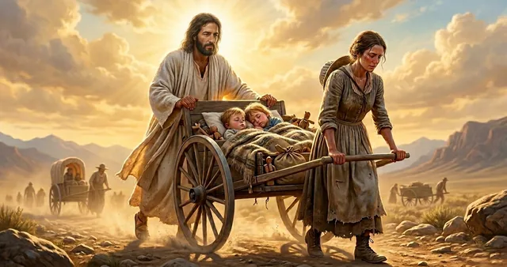
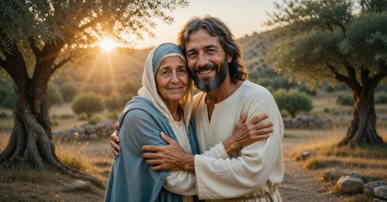
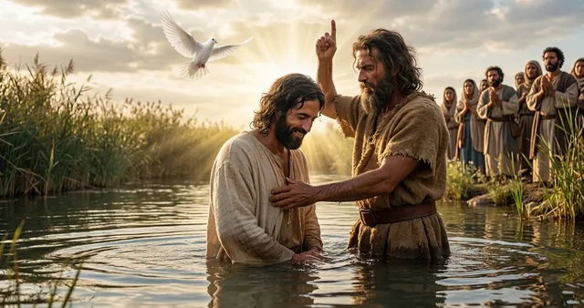
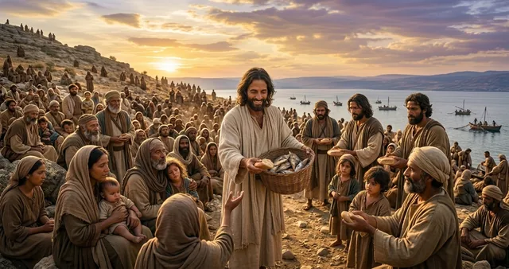
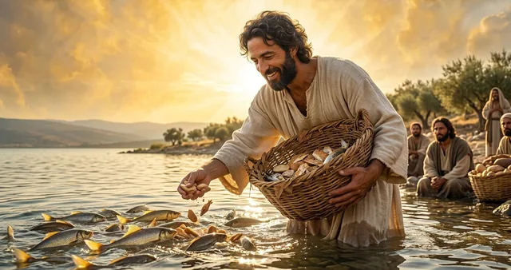
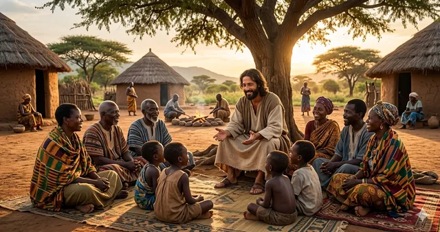
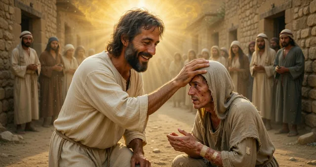
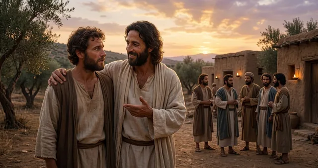
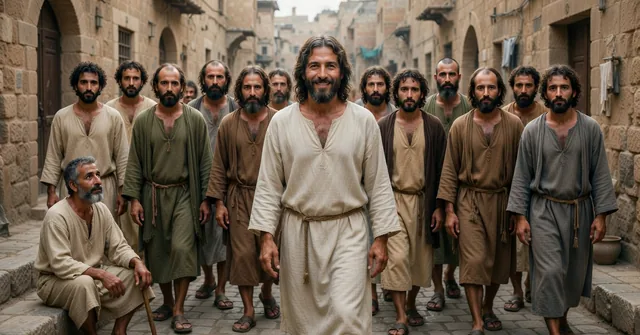
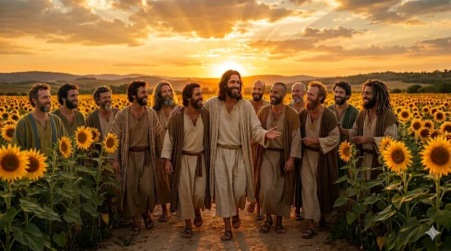
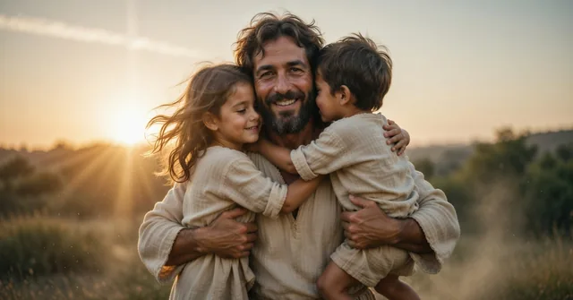
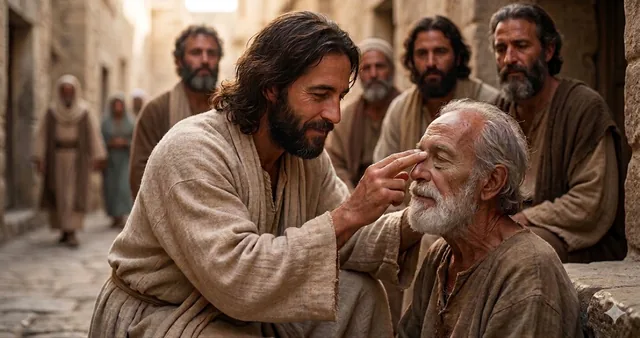
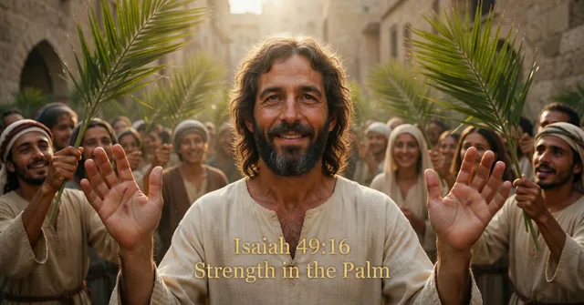
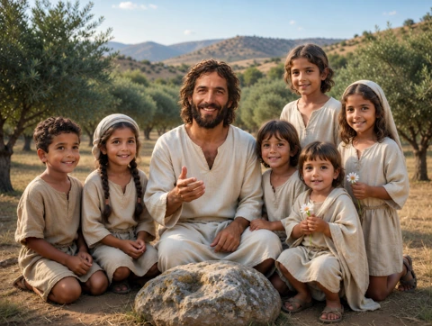
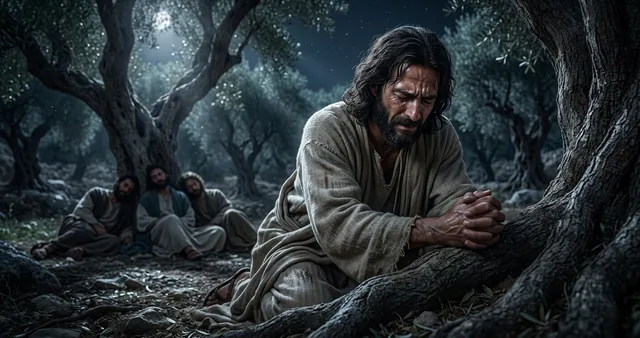
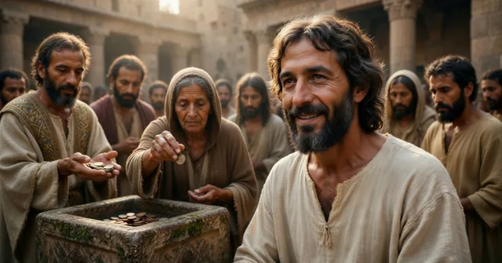
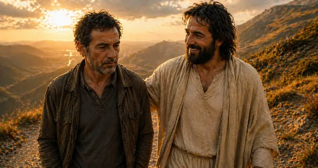
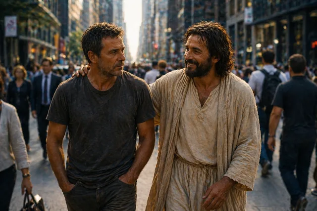
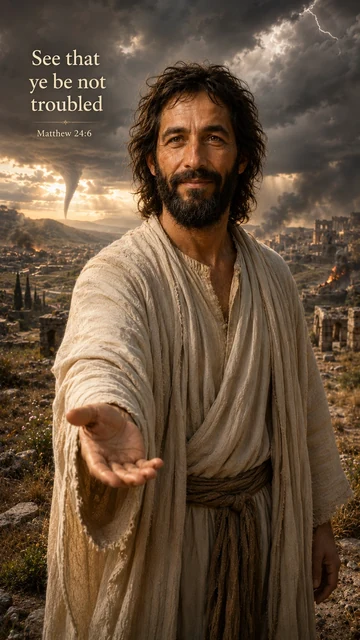
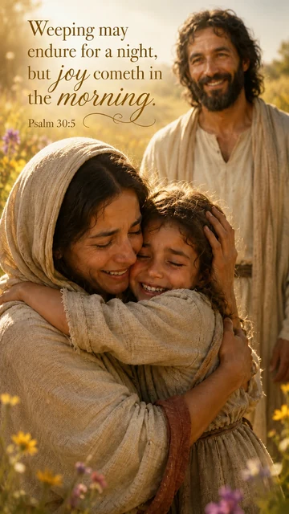
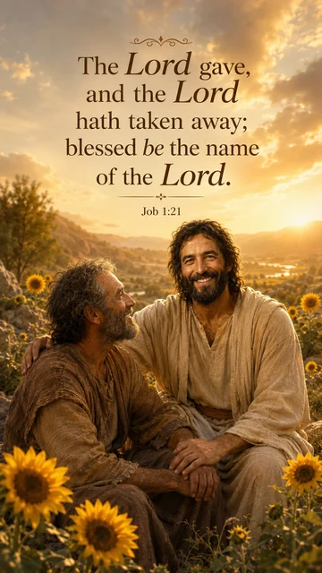
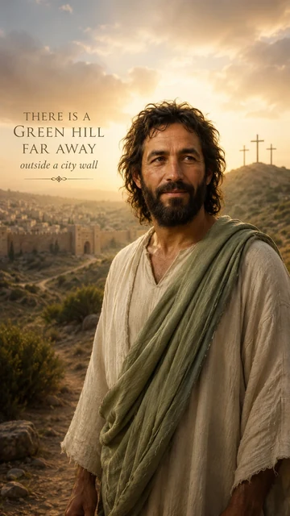
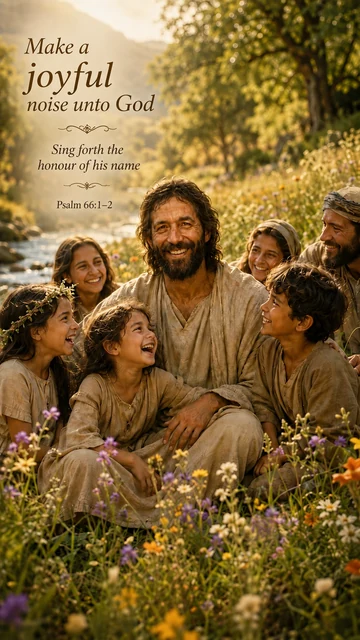
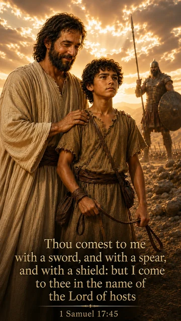
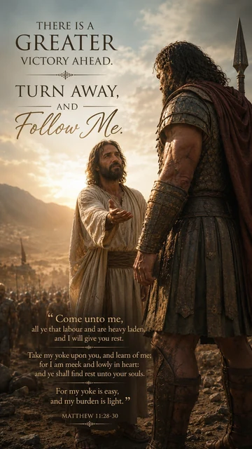
Follow the story behind the pictures: the coming forth of the Book of Mormon, the people who helped, and the faith that sustained them.
Spend a little more time with one picture. Read the scripture beside it, learn about the Savior, and consider what His words mean in your life.
Watch, read, and reflect
Compare a visual portrayal of the risen Savior with John 20, then continue into the linked scripture study.
Church video
Listen to a message about the hope we have because Jesus Christ lives.
The Church of Jesus Christ of Latter-day Saints
What catches your attention in the picture? Open a study below and read the scripture beside it. Return to both as you explore your questions.
Follow John 20 from the empty tomb to the chapter’s stated purpose. Continue into the study of Jesus Christ or life after death.
Compare John 10 with Psalm 23. Explore Christ’s self-giving care without reading the image as a promise of a trouble-free life.
Read Mark 10 and 3 Nephi 17 in their separate settings, then consider specific ways to welcome and protect children.
Read Psalm 46 in a setting of upheaval, then explore Christ’s peace and responsible action while questions remain open.
Take your time with a picture or a verse that speaks to you. You might pause to pray, write down a question, or simply look a little longer. There is no need to hurry to a conclusion.